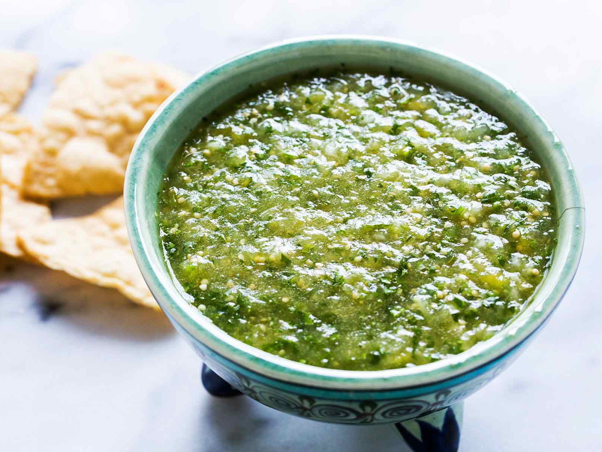

Salsa Verde

Description
This is a recipe to make salsa verde. The recipe is inspired by
a website that will be linked, so it will not be following
all the steps according to that website.
Ingredients:
- tomatillo 6
- onion 1/4 onion
- garlic 1 clove
- Serrano peppers 3 peppers
- Jalapeno pepper 1/2 pepper
- Salt To taste
- Limes 6 Limes
- Head of Cilantro 1 handful
- Water 3 Cups
Steps:
- Boil water.
- Place tomatillo, serrano peppers, jalapeno peppers in water and cook 10-15 minutes.
- Heat grill pan, and heat tomatillo, serrano peppers, jalapeno peppers for 3-5 minutes.
- Place tomatillo, serrano peppers, jalapeno peppers, onion, garlic, Cilantro,salt, and water to blender.
- Blend to choice consistency. (for a more liquidy salsa add water and blend longer.)